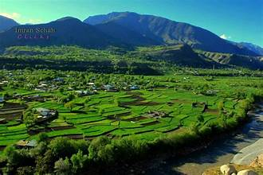

The unique highland home of the Kalash people — famed for colourful culture, rituals, and mountain scenery.
Introduction
The Kalash Valley (often used to refer collectively to the three Kalash valleys — Bumburet, Rumbur and
Birir) lies in the Hindu Kush mountains of Chitral District, Khyber Pakhtunkhwa. The Kalash are an indigenous
community with distinct language, dress, music and festivals that set them apart in the region.
The valleys are celebrated for their vibrant wooden houses, terraced fields, fruit orchards, and spectacular views
of alpine peaks. Tourism here focuses on cultural exchange, trekking, and enjoying local hospitality.
History & People
Origins: The Kalash are an ancient people with a distinctive Indo-Aryan language and customs;
their precise origins are the subject of scholarly interest and local oral traditions.
Settlements: Main valleys: Bumburet (the largest), Rumbur, and Birir.
Conservation: The Kalash culture is vulnerable due to modern pressures — local and national
efforts promote cultural preservation and sustainable tourism.
Kalash women and men wearing distinctive colourful headdresses and garments.

Terraced orchards and alpine pastures surrounding the villages.
Culture & Festivals
Kalash culture is rich in music, dance, and ritual. Three major seasonal festivals attract visitors and celebrate
agricultural cycles and spiritual beliefs:
Joshi (Spring festival): A joyful spring celebration of fertility, flowers and community dances.
Uchal (Autumn festival): A harvest celebration featuring elaborate rituals and feasts.
Choimus / Chawmos (Winter solstice festival): A major ritual event combining feasting, masked dances and
purification rites (often observed privately but with public elements).
Traditional handicrafts include wooden carving, embroidery and woven goods. Respect for local customs and obtaining
permission before photographing ceremonies is important.
Attractions & Activities
Visitors come to Kalash Valley for cultural immersion, easy treks, scenic photography, and birdwatching. Popular activities:
Guided village walks in Bumburet, Rumbur and Birir.
Short treks to mountain viewpoints and alpine meadows.
Attending (with permission) local festivals and witnessing traditional dances.
Sampling local cuisine and seasonal fruits (apples, apricots).
Visitor Information
Access: Reachable from Chitral by road; narrow mountain roads require careful driving. Jeeps and local transport are common.
Best Time: April–October for comfortable weather; festivals like Joshi and Uchal occur seasonally (check local dates).
Accommodation: Simple guesthouses, homestays and community-run lodgings; bring cash and basic supplies.
Etiquette: Dress modestly, ask before photographing people and festivals, and respect local traditions.
Safety & Conservation: Support local guides and community enterprises; avoid gifts or trade that may harm cultural values.